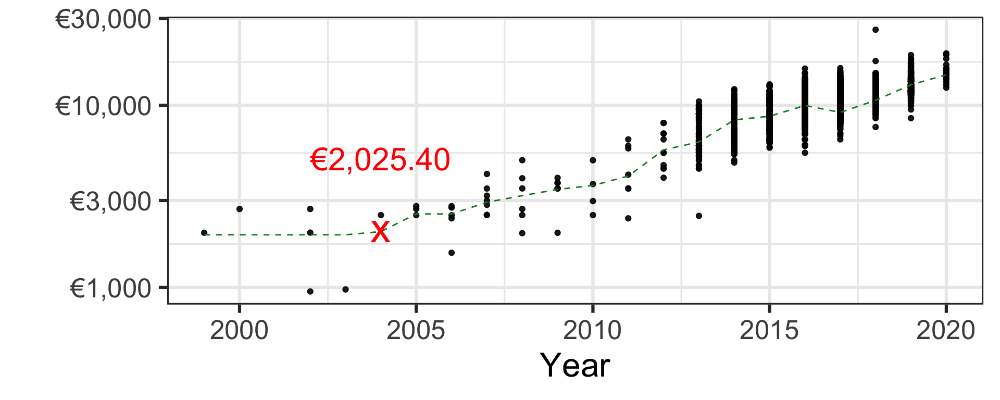
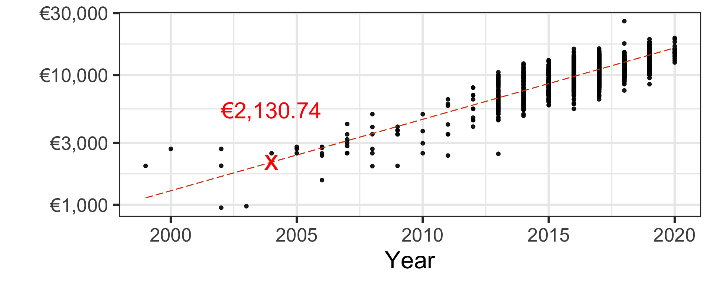
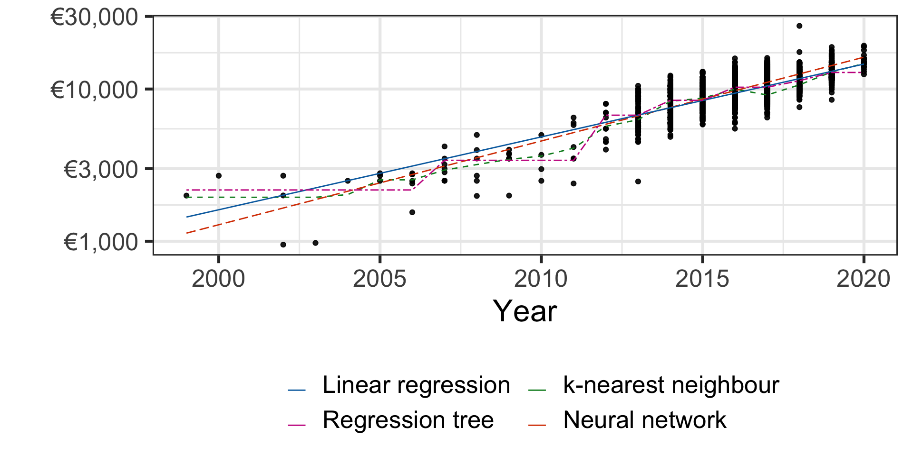
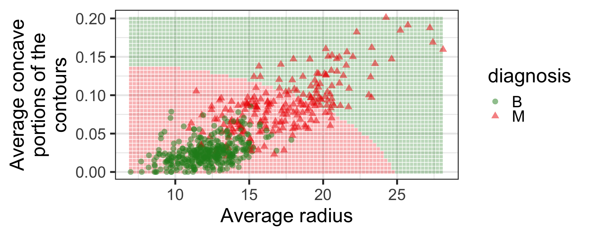

ETC3250/5250
Introduction to Machine Learning
Overview
Lecturer: Emi Tanaka
Department of Econometrics and Business Statistics
Machine learning
- Machine learning (ML) is a branch of artificial intelligence (AI) that use data and algorithm to learn about patterns in the data.
- Some applications include:
- Predict the credit risk score of the borrower to repay the loan
- Detect fraudulent activities
- Segment customers based on shared characteristics
- Classify digits from handwriting
- Diagnose breast cancer
- ML can be applied to a wide range of problems in a variety of sectors.
Toyota dealer
- You need to price a second-hand 2004 Toyota Yaris for a car dealer.
_–_Frontansicht,_21._Juli_2012,_Heiligenhaus_(cropped).jpg)
- You make use of this Toyota used car listing data.
Car price as a function of year
- Let’s consider the (log of) Toyota Yaris car price as a function of year.
- The car price is generally higher for cars made more recently.
Simple linear regression
- Let’s fit the line of best fit using the least squares approach.
Simple linear regression
- Let’s fit the line of best fit using the least squares approach.
- Under this (simplistic) model, we would price a second-hand 2004 Toyota Yaris as €2,502.19.
Machine learning methods
ML paradigm
- Supervised learning is for labelled data with two primary cases:
- classification where the response is categorical:
- whether a patient has the disease or not (binary)
- identifying which animal it is from an image (multi-class)
- regression where the response is numerical:
- predicting the housing price
- forecasting tomorrow’s maximum temperature
- classification where the response is categorical:
ML paradigm
- Unsupervised learning is for unlabelled data with two primary cases:
- clustering to find unobserved grouping:
- customer segmentation based on shared characteristics
- association to discover associations:
- whether item X is likely to be bought together with item Y
- clustering to find unobserved grouping:
ML paradigm (not covered in this unit)
- Semi-supervised learning is for data with a mix of labelled and unlabelled data
- classify text documents
- fraud detection
- Reinforcement learning trains the model based on rewarding desired behaviours:
- recommender systems
- predictive text
- machine translations
Supervised learning
We cover the following methods:
- Regression problems:
- Linear & non-linear regression:
- Parameteric
- Non-parametric
- Regression trees
- Tree-ensemble methods
- k-nearest neighbours (k-NN)
- Neural networks
- Linear & non-linear regression:
- Classification problems:
- Logistic regression
- Linear & quadratic discriminant analysis (LDA & QDA)
- Classification trees
- Tree-ensemble methods
- k-nearest neighbours (k-NN)
- Support vector machines (SVM)
- Neural networks
Unsupervised learning
We cover the following methods:
- Dimension reduction:
- multi-dimensional scaling (MDS)
- principle component analysis (PCA)
- Clustering:
- hierarchical
- k-means
Illustration of supervised learning methods with
numerical response
Simple linear regression
Pricing a second-hand 2004 Toyota Yaris car
Regression trees
Pricing a second-hand 2004 Toyota Yaris car
For now don’t worry how this is calculated - we will learn this later.
k-nearest neighbour
Pricing a second-hand 2004 Toyota Yaris car

Neural network
Pricing a second-hand 2004 Toyota Yaris car

Comparing models for regression problem
Pricing a second-hand 2004 Toyota Yaris car

| Method | Price |
|---|---|
| Linear regression | €2,502.19 |
| Regression tree | €2,172.45 |
| k-nearest neighbour | €2,025.40 |
| Neural network | €2,130.74 |
- Which model to use? How to choose parameters?
We’ll come back to these questions later.
Illustration of supervised learning methods with categorical response
Breast cancer diagnosis
Image from American Cancer Society website
Image from Street et al. (1993) Nuclear feature extraction for breast tumor diagnosis. Biomedical Image Processing and Biomedical Visualization 1905 https://doi.org/10.1117/12.148698
- We use the Wisconsin breast cancer data set to build a model to predict if the breast mass sample is malignant (M) or benign (B).
- Here the response is categorical with two classes (M and B).
Features from the digitized image from FNA
- Before fitting any model, we can already see that the average radius and concave portions in the digitized image separate out the two classes.
Logistic regression
Again don’t worry how this is calculated - we will cover this in Week 4.
k-nearest neighbour
Neural network

- What would you do to choose which model to use?
We’ll talk more on this later.
Illustration of unsupervised learning
Customer personality analysis
scroll
- We use this customer survey data here that has over 20 features of a customer:
People
ID: Customer’s unique identifierYear_Birth: Customer’s birth yearEducation: Customer’s education levelMarital_Status: Customer’s marital statusIncome: Customer’s yearly household incomeKidhome: Number of children in customer’s householdTeenhome: Number of teenagers in customer’s householdDt_Customer: Date of customer’s enrollment with the companyRecency: Number of days since customer’s last purchaseComplain: 1 if the customer complained in the last 2 years, 0 otherwise
Products
MntWines: Amount spent on wine in last 2 yearsMntFruits: Amount spent on fruits in last 2 yearsMntMeatProducts: Amount spent on meat in last 2 yearsMntFishProducts: Amount spent on fish in last 2 yearsMntSweetProducts: Amount spent on sweets in last 2 yearsMntGoldProds: Amount spent on gold in last 2 years
Promotion
NumDealsPurchases: Number of purchases made with a discountAcceptedCmp1: 1 if customer accepted the offer in the 1st campaign, 0 otherwiseAcceptedCmp2: 1 if customer accepted the offer in the 2nd campaign, 0 otherwiseAcceptedCmp3: 1 if customer accepted the offer in the 3rd campaign, 0 otherwiseAcceptedCmp4: 1 if customer accepted the offer in the 4th campaign, 0 otherwiseAcceptedCmp5: 1 if customer accepted the offer in the 5th campaign, 0 otherwiseResponse: 1 if customer accepted the offer in the last campaign, 0 otherwise
Place
NumWebPurchases: Number of purchases made through the company’s websiteNumCatalogPurchases: Number of purchases made using a catalogueNumStorePurchases: Number of purchases made directly in storesNumWebVisitsMonth: Number of visits to company’s website in the last month
Dimension reduction and clustering
- Data with too many variables is hard to understand or process.
- We can reduce dimension in a meaningful way.
- Or cluster similar groups together to find inherent grouping structure.
Statistical notations, concepts and terminologies
We need maths
- We need mathematical notations to form deeper understanding or discussion of ML models.
- We’ll refer:
- y as a response (also called dependent variable), and
- x_j as the j-th predictor (also called feature or explanatory variable).
- We denote:
- n for the total number of observations (or samples), and
- p for the total number of predictors.
Assumption for supervised learning
- We assume that there is some fixed, but typically unknown, function f that maps the predictors to response:
y = f(x_1, x_2, ..., x_p) + e.
- The error term, e, is typically (but not always) assumed to be:
- independent of predictors, and
- has a mean of zero.
More notational matters
- Predictions for
- y_i are denoted as \hat{y}_i = f(x_{i1}, x_{i2}, ..., x_{ip}).
- e_i are denoted as \hat{e}_i = y_i - \hat{y}_i and referred to as the residual for the i-th observation.
- Estimations of model parameters are denoted with \hat{ },
- e.g., \hat{\beta}_0 is an estimate of the intercept in the previous multiplie linear regression model.
Notations for multiple linear regression
Consider a multiple linear regression:
y_i = \beta_0 + \beta_1 x_{i1} + \beta_2 x_{i2} + ... + \beta_p x_{ip} + e_i,\quad\text{for }i = 1, ..., n
- y_i is the i-th observation of variable y,
- x_{ij} is the i-th observation of the j-th predictor,
- \beta_0 is the intercept and \beta_j is the slope or coefficient of x_j, and
- e_i is the error term for the i-th observation and is often assumed e_i \sim N(0, \sigma^2).
Notice we do not use i when we refer to a generic variable, use i for observations and j for features.
Alternative notations for multiple linear regression
- We can use a summation notation where x_{i0} = 1:
y_i = \beta_0 + \sum_{j=1}^p\beta_jx_{ij} + e_i = \sum_{j=0}^p\beta_jx_{ij} + e_i,\quad\text{for }i = 1, ..., n
- Or represent it using a matrix notation:
\boldsymbol{y} = \mathbf{X}_{n\times (p + 1)}\boldsymbol{\beta} + \boldsymbol{e}, \quad\text{assuming } \boldsymbol{e}\sim N(\boldsymbol{0}, \sigma^2\mathbf{I}_{n\times n}).
Properties of multiple linear regression
- Least-squares or maximum likelihood estimate \hat{\boldsymbol{\beta}} = (\mathbf{X}^\top\mathbf{X})^{-1}\mathbf{X}^\top\boldsymbol{y}
(assuming that \mathbf{X} is full rank). - Fitted or predicted values: \hat{y}_i = \sum_{j=0}^{p}\hat{\beta}_jx_{ij}.
- Residual standard error: RSE = \sqrt{\frac{1}{n - p - 1}\sum_{i=1}^n(y_i - \hat{y}_i)^2} = \sqrt{\frac{1}{n - p - 1}(\boldsymbol{y} - \mathbf{X}\hat{\boldsymbol{\beta}})^\top(\boldsymbol{y} - \mathbf{X}\hat{\boldsymbol{\beta}})}.
- RSE = \hat{\sigma} is an unbiased estimator of \sigma.
Linear algebra
Matrix
- A matrix is a rectangular array of scalars (i.e. numbers).
\begin{bmatrix}2 & 3 \\4 & 3 \\ 1 & 1\end{bmatrix}\qquad\begin{bmatrix}-3 & 3 \\2 & 9 \end{bmatrix}\qquad\begin{bmatrix}1 & 3 & -1 \\ -4 & 0 & 0\end{bmatrix}
- In this unit, a matrix is denoted as a bold capital letter, e.g. \mathbf{A}, \mathbf{X} and \mathbf{B}.
Dimensions of a matrix
- Occasionally the dimension of the matrix is denoted in the subscript:
\mathbf{X}_{n\times p} = \begin{bmatrix}x_{11} & x_{12} & \cdots & x_{1p}\\ x_{21} & x_{22} & \cdots & x_{2p}\\ \vdots & \vdots & \ddots & \vdots\\ x_{n1} & x_{n2} & \cdots & x_{np}\end{bmatrix}
Diagonal matrix
- A diagonal matrix is a matrix where off-diagonal entries are zero.
\mathbf{D} = \text{diag}(d_{1}, d_{2}, d_{3}, d_4) = \begin{bmatrix} d_{1} & 0 & 0 & 0\\0 & d_{2} & 0& 0\\ 0 & 0 & d_3 & 0 \\ 0 & 0 & 0 & d_4 \end{bmatrix}\qquad \mathbf{I}_3 = \begin{bmatrix}1 & 0 & 0 \\ 0 & 1 & 0 \\ 0 & 0 & 1 \end{bmatrix}
- An identity matrix of dimension n is a n\times n diagonal matrix denoted as \mathbf{I}_n where all the diagonal entries is 1.
Vectors
- A m-vector is a m\times 1 matrix:
\boldsymbol{y} = \begin{bmatrix}y_1 \\ y_2\\ \vdots \\ y_m\end{bmatrix}
- In this unit, a vector is denoted with bold italic lower case letter,
e.g. \boldsymbol{y}, \boldsymbol{x}, and \boldsymbol{\beta}.
Transpose operator
- A transposed matrix or vector is denoted with \top
\mathbf{X} = \begin{bmatrix}x_{11} & x_{12} & x_{13}\\ x_{21} & x_{22} & x_{23}\end{bmatrix}\qquad \mathbf{X}^\top = \begin{bmatrix}x_{11} & x_{21} \\ x_{12} & x_{22} \\ x_{13} & x_{23} \end{bmatrix}
\boldsymbol{y} = \begin{bmatrix}y_1\\y_2 \\ \vdots\\ y_n\\\end{bmatrix}\qquad\boldsymbol{y}^\top = \begin{bmatrix}y_1 & y_2 & \cdots & y_n \end{bmatrix}
Resources for linear algebra
- See any first year linear algebra textbook.
- Or this linear algebra cheat sheet.
Model evaluation
Goodness of fit
- Sum of squares of errors: SSE = \sum_{i = 1}^n e_i^2 = \boldsymbol{e}^\top\boldsymbol{e}
- Residual sum of squares: RSS = \sum_{i = 1}^n \hat{e}_i^2 = \sum_{i=1}^n (y_i - \hat{y}_i)^2
- Total sum of squares: TSS = \sum_{i=1}^n (y_i - \bar{y})^2
- A goodness of the fit can be measured by
- R^2 = 1 - \dfrac{RSS}{TSS}, the coefficient of determination, is the proportion of variation explained by the model, and
- R^2_a = 1 - \dfrac{RSS/(n - p)}{TSS/ (n - 1)}, adjusted R^2, is more appropriate as it, unlike R^2, does not necessary increase with the addition of more predictors.
Mean square error
\begin{align*} MSE = E\left[y-\hat{y}\right]^2 &= E\left[f(x_1, ..., x_p) + e - \hat{f}(x_1, ..., x_p)\right]^2\\ &= \underbrace{E\left[f(x_1, ..., x_p) - \hat{f}(x_1, ..., x_p)\right]^2}_{\text{reducible}} + \underbrace{\text{var}(e)}_{\text{irreducible}} \\ &= \text{bias}[\hat{f}(x)]^2 + \text{var}[\hat{f}(x)] + \text{var}(e) \end{align*}
Model bias and variance
- If a model has:
- a high bias, the average response is far from the true value – referred to as underfitting
- a high variance, then the fitted model doesn’t generalise well beyond the (training) data – this is referred to as overfitting
Training, validation and testing data sets
- In machine learning, three data sets are commonly used to build and select the model:
- training data is used to fit the initial model
- validation data is used to evaluate the model fit from the training data to help tune the hyperparameters
- testing data (or holdout data) is used to evaluate the tuned model
- We’ll denote the set of index of training data, validation data and testing data as Train, Valid and Test, respectively.

Image from Emi’s blog
Predictive accuracy
- Predictive accuracy of trained and tuned models should be measured on the testing data.
Some measures include (note: lower magnitude is better):
- Root mean squared error: RMSE_{Test} = \sqrt{\frac{1}{|Test|} \sum_{i \in Test} \hat{e}_i^2}
- Mean absolute error: MAE_{Test} = \frac{1}{|Test|} \sum_{i \in Test} |\hat{e}_i|
- Mean absolute percentage error: MAPE_{Test} = \dfrac{100}{|Test|} \sum_{i \in Test} \left|\dfrac{\hat{e}_i}{y_i}\right|
- Mean percentage error: MPE_{Test} = \dfrac{100}{|Test|} \sum_{i \in Test} \dfrac{\hat{e}_i}{y_i} (note this can be a negative value)
- Most often RMSE_{Test} \geq RMSE_{Train}.
An application with maths and code
Used Toyota car listing
- Let’s have a look at the Toyota car listing.
- Note this data contains other Toyota models and not just Yaris.
Rows: 6,738
Columns: 9
$ model <chr> "GT86", "GT86", "GT86", "GT86", "GT86", "GT86", "GT86", "…
$ year <dbl> 2016, 2017, 2015, 2017, 2017, 2017, 2017, 2017, 2020, 201…
$ price <dbl> 16000, 15995, 13998, 18998, 17498, 15998, 18522, 18995, 2…
$ transmission <chr> "Manual", "Manual", "Manual", "Manual", "Manual", "Manual…
$ mileage <dbl> 24089, 18615, 27469, 14736, 36284, 26919, 10456, 12340, 5…
$ fuelType <chr> "Petrol", "Petrol", "Petrol", "Petrol", "Petrol", "Petrol…
$ tax <dbl> 265, 145, 265, 150, 145, 260, 145, 145, 150, 265, 265, 14…
$ mpg <dbl> 36.2, 36.2, 36.2, 36.2, 36.2, 36.2, 36.2, 36.2, 33.2, 36.…
$ engineSize <dbl> 2, 2, 2, 2, 2, 2, 2, 2, 2, 2, 2, 2, 2, 2, 2, 2, 2, 2, 2, …A linear regression
- A proposed model is \log_{10}(\texttt{price}_i) = \beta_0 + \beta_1 \texttt{year}_i + e_i
A linear regression with R
\log_{10}(\texttt{price}_i) = \beta_0 + \beta_1 \texttt{year}_i + \epsilon_i
- This model is fitted using
lm()in R as
Extracting model parameters in R
- You can use the
broompackage to get the estimate of model parameters for many models
Extracting model summaries in R
Extractng model values in R
| log10(price) | year | .fitted | .hat | .sigma | .cooksd | .std.resid |
|---|---|---|---|---|---|---|
| 4.204120 | 2016 | 4.011465 | 0.0001655 | 0.1702762 | 0.0001060 | 1.1314938 |
| 4.203984 | 2017 | 4.062510 | 0.0001504 | 0.1702836 | 0.0000519 | 0.8308979 |
| 4.146066 | 2015 | 3.960421 | 0.0002418 | 0.1702773 | 0.0001438 | 1.0903664 |
| 4.278708 | 2017 | 4.062510 | 0.0001504 | 0.1702720 | 0.0001212 | 1.2697597 |
| 4.242988 | 2017 | 4.062510 | 0.0001504 | 0.1702781 | 0.0000845 | 1.0599745 |
| 4.204066 | 2017 | 4.062510 | 0.0001504 | 0.1702836 | 0.0000520 | 0.8313763 |
Predicting from model fit with R
- The
predictis a generic (S3) function that works for many kind of model objects
Splitting data into testing and training data
- Let’s use
rsampleto split the data into the training and testing data:
library(rsample)
set.seed(1) # to replicate the result
toyota_split <- initial_split(toyota, prop = 0.75)
toyota_split<Training/Testing/Total>
<5053/1685/6738>- This is randomly splitting 75% of data into training data and the remaining 25% into testing data.
Train the ML models
- Now we train three models:
reg- a simple linear regression model,tree- a regression tree, andknn- a k-nearest neighbour
Predict response on testing data
- And predict the responses on the testing data:
results_test <- imap_dfr(model_fits, ~{
toyota_test %>%
select(year, price) %>%
mutate(.model = .y,
.pred = 10^predict(.x, .))
})
head(results_test)| year | price | .model | .pred |
|---|---|---|---|
| 2017 | 15995 | reg | 11543.68 |
| 2017 | 17498 | reg | 11543.68 |
| 2017 | 18995 | reg | 11543.68 |
| 2020 | 27998 | reg | 16522.75 |
| 2016 | 13990 | reg | 10243.10 |
| 2017 | 17990 | reg | 11543.68 |
Visualising the predictions
Code
results_pred <- imap_dfr(model_fits, ~{
tibble(year = seq(min(toyota$year), max(toyota$year))) %>%
mutate(.pred = 10^predict(.x, .),
.model = .y)
})
gres <- ggplot(toyota_train, aes(year, price)) +
geom_point(alpha = 0.5) +
geom_line(data = results_pred, aes(y = .pred, color = .model)) +
scale_color_manual(values = c("#C8008F", "#006DAE", "#008A25")) +
scale_y_log10(label = scales::dollar_format(prefix = "€", accuracy = 1)) +
theme(legend.position = "bottom") +
labs(title = "Training data", y = "", color = "") +
guides(color = "none")
gresPredictive accuracies with R
| .model | rmse | mae | mape | mpe | rsq |
|---|---|---|---|---|---|
| knn | 5723.4 | 4332.7 | 36.6 | -14.2 | 0.175 |
| reg | 5761.3 | 4198.7 | 33.2 | -6.9 | 0.171 |
| tree | 5691.4 | 4141.4 | 33.1 | -7.3 | 0.190 |
Select a model
- Based on the predictive accuracy, we may choose to select the regression tree for prediction (it has the best metric for all, except for MPE).
- But for inference, simple linear regression model has an easier interpretability.
- Selecting a model isn’t just about selecting the model with the best metric - data and problem context matters.

Cautionary tales
What is the aim?
- When you are considering to use ML methods, broadly there are two aims: prediction or inference.
- In inference, we would like to understand how y is related to x_1, ..., x_p.
- Which predictors are associated with the response?
- What is the relationship between the response and each predictor?
- Some ML methods may have good predictive performance but poor interpretability, i.e. you don’t understand how the ML method is making the prediction.
It’s not necessary causation
- A predictor that is highly correlated or associated with the response does not necessary mean it’s the causation.
- Homelessness and crime rate in suburbs might be highly correlated.
- Just because a model with good predictive ability contains certain predictors, it doesn’t mean those predictors are causal effects of the response.
- Predicting damage due to fire by the number of firemen sent.
- In early primary school, astrological sign predicts IQ well.
Beware of missing or inappropriate data
- ML methods generally assume that the data is complete, i.e. no missing entries, in such cases you may need to impute or remove the data with care.
- Any fitted model is dependent on your training data. You may be missing important variables or not have a representative sample.
- Just because you can fit a ML model with good prediction, it doesn’t mean you should.
- Consider the ethical implications of making wrongful interpretations or decisions based on the data you used, e.g. using the variable “race” to predict fraud is akin to building a racist model.
Preprocessing the data
- Before modelling, you should check the data for any quality issues:
- check marginal distribution or joint (usually pairwise) distribution,
- check for outliers and missing entries,
- impute or remove entries as appropriate, and
- transform variables (most often to standardise or make the distribution symmetric).
- Some data issues become apparently after modelling:
- by checking model diagnostics or model assessments, and
- noticing you may need to feature engineer (create a new variable from existing variables).
Takeaways
- There are diverse sets of problems where appropriate data with adequate machine learning is helpful in solving it.
- In order to compare predictive performance of machine learning models, we apply the trained models to the testing data.
- There are many methods to machine learning and various metrics to compare models – what is appropriate depends on the data, context and aim.
- To understand these methods and metrics, we will use some mathematics, go through variety of data and apply the models using R.

ETC3250/5250 Week 1